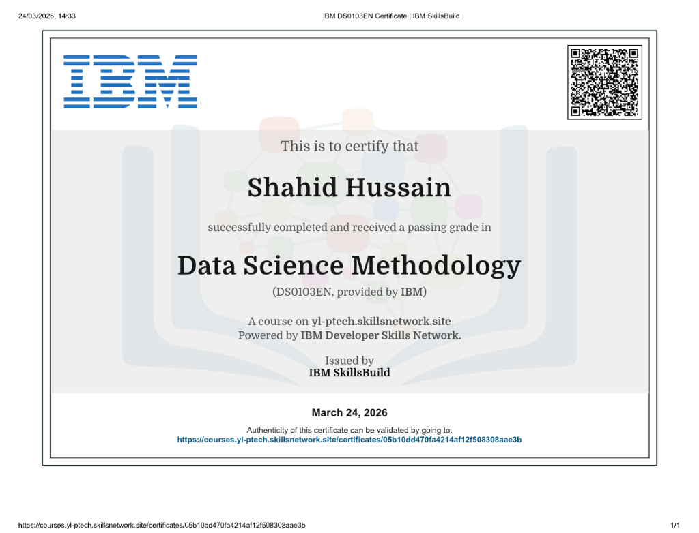
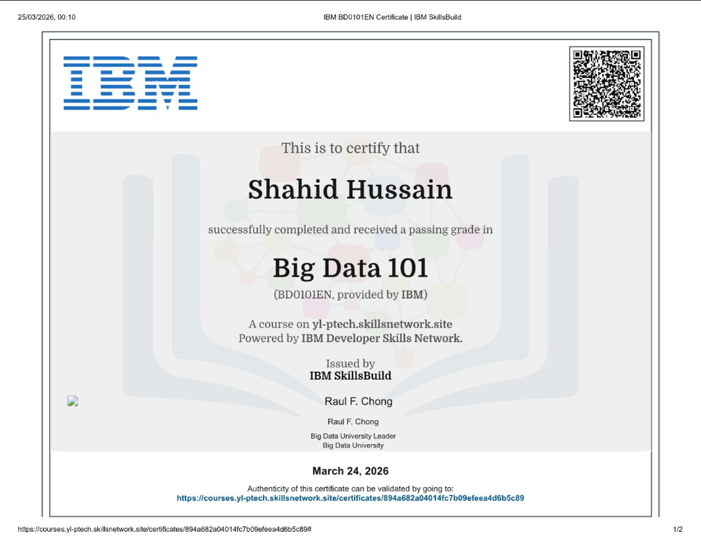
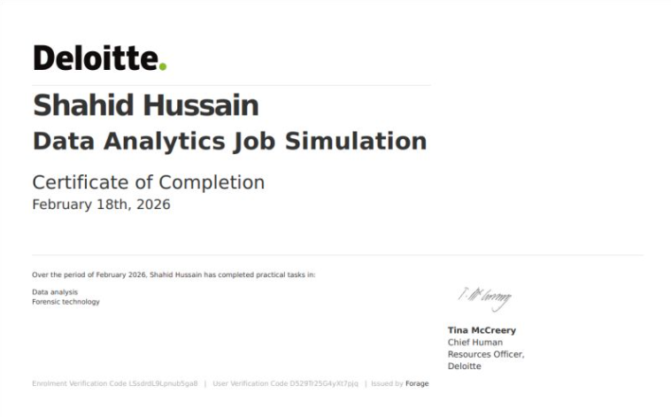
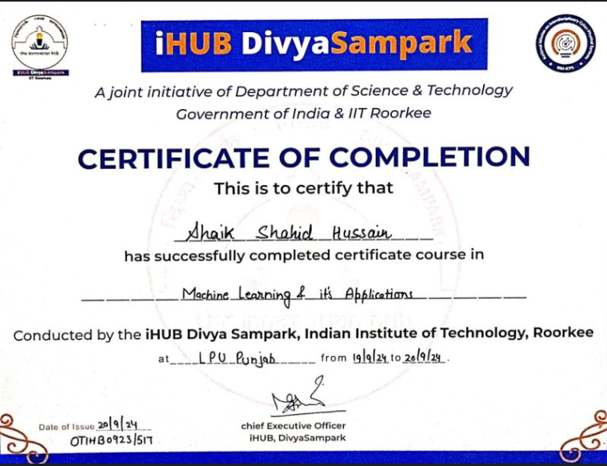
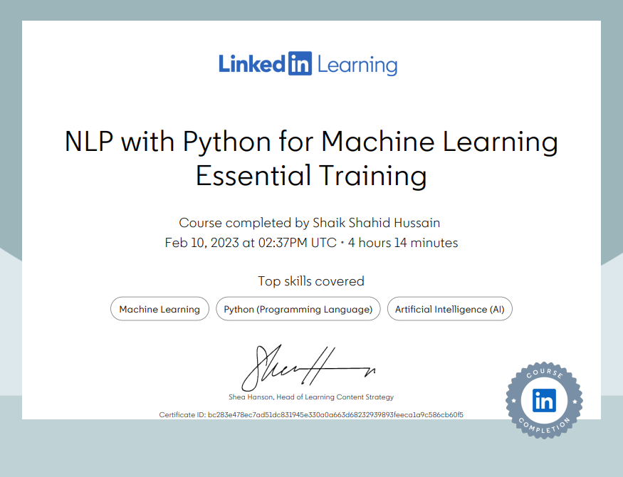

Hi, I'm Shaik Shahid Hussain
I am a |
Data Scientist and AI Engineer who bridges the gap between raw data, machine learning pipelines, and user-facing business applications. Specializing in NLP, Large Language Models (LLMs), and interactive data systems.
About Me
Solving Real-World Problems Through Structured Data Science
I am a B.Tech graduate in Computer Science & Engineering from Lovely Professional University (Class of 2026). I have hands-on experience building, training, and deploying end-to-end Machine Learning pipelines. From problem framing and feature engineering to model deployment and drift evaluation, I enjoy the entire lifecycle of data systems.
My primary interest lies in Natural Language Processing (NLP) and Generative AI. I develop agentic workflows, prompt-engineered pipelines, and retrieval-augmented systems that translate ambiguous customer queries or messy text datasets into business outcomes.
Technical Toolkit
Hover or click on skills to see how I apply them to build production-grade machine learning pipelines.
Machine Learning & Stats
AI & Generative AI
Languages & Querying
Data Analysis & Insights
Tools & Deployment
Project Playgrounds
Instead of just reading descriptions, interact with live simulated models representing my core portfolio projects below.
Mood-Based Book Recommendation System
PythonNLPscikit-learnPyTorchRoBERTaStreamlit
Framed book recommendation as a structured NLP pipeline. Features automated mood detection via a fine-tuned RoBERTa sentiment model, converting qualitative emotional inputs into similarity scores.
- Transforms user emotional text state into quantitative vector inputs.
- Employs Cosine Similarity to match emotional states to annotated book datasets.
- Robust CI/CD validation checks that monitor prediction drift.
Interactive Demo: Simulating Sentiment & Search
Type how you feel, or select a pre-set mood to see the recommendation logic:
Career AI Agent: Resume & GitHub Roadmap Generator
PythonNLPLLMsGenerative AIFastAPIStreamlit
An analytical AI pipeline that parses unstructured resume PDFs and GitHub profile data to conduct a skills gap analysis against target industry benchmarks, dynamically outputting a personalized learning roadmap.
- NLP parser extracts key concepts, skill counts, and repository metrics without manual tags.
- Reasoning agent evaluates current skillset against typical career requirements.
- Iterative system prompting and validation layers to minimize hallucinations.
Interactive Demo: Simulated Gap Analysis & Roadmapper
Select your target career path and primary skill level to see the roadmap generator formulate milestones:
PackVote: Group Travel Consensus System
PythonCosine SimilarityGemini APIFastAPIREST APIs
Resolves multi-stakeholder preference conflicts by gathering individual budget constraints, location vibes, and activity priorities. Uses cosine similarity ranking and Google Gemini API to design group consensus itineraries.
- Gathers multi-user preference vectors and computes centroid preferences.
- Applies heuristic cost-estimation modules matching tight budget constraints.
- Integrates LLM reasoning as an itinerary synthesizer.
Interactive Demo: Cosine Consensus Calculator
Select budget boundaries and trip vibes for three travelers to run the vector comparison:
Certifications & Accomplishments

Data Science Methodology
Issued: March 24, 2026
Focuses on structural stages for framing, modeling, evaluating, and addressing data science challenges.

Big Data 101
Issued: March 24, 2026
Covers core concepts of Hadoop ecosystems, Spark engines, and scalable MapReduce architectures.

Data Analytics Job Simulation
Issued: February 18, 2026
Completed practical tasks in exploratory data analysis and forensic technology, mimicking real consultant workflows.

Machine Learning & Its Applications
Issued: September 20, 2024
Completed a certified machine learning course conducted by iHUB DivyaSampark at LPU Punjab, exploring model training and pipeline architectures.

NLP with Python for ML
Issued: February 10, 2023
Advanced training in text preprocessing, tokenization, vectorization, and building machine learning models for language tasks.
Key Achievements
Runner-Up, Group Discussion Competition
April 2025Demonstrated strong communication, leadership, and group dynamics by presenting complex analytical findings and data-driven recommendations to mixed audiences, directly proving capability in influencing stakeholders.
Runner-Up, Critical Thinking Challenge
September 2023Applied structured decomposition of ambiguous, multi-variable analytical problems under tight timelines, mirroring the data science process of translating complex open-ended business questions into models.
Get In Touch
Let's collaborate on data solutions
Are you looking for an ML practitioner who can dissect a business challenge, build model code, and deploy interactive dashboards? Reach out!